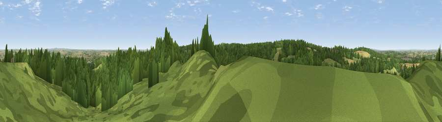

Viewpoint near Atherstone
#30841 in England · top 60% of its area beats it · near AtherstoneThe view, rendered

A 360° render of this exact spot computed from the terrain model, tree cover and land cover — summer colours, afternoon light, calibrated against photographs of famous viewpoints. Real trees, hedges and buildings will differ in detail.
The panorama
Grey silhouette: terrain skyline in each direction (720 bearings, Earth curvature and refraction included). Dashed green: skyline with trees (+15 m) and buildings (+8 m) as obstacles. Blue strip: how far the ground is visible on each bearing.
Where the view opens
Wedge length = distance to the farthest visible ground on that bearing (vegetation-aware). Rings at 10, 25 and 50 km.
What fills the view
50% woodland · 35% grassland · 11% cropland · 3% built-up ·
Angular shares of the visible panorama (visual magnitude), not map area. Landscape diversity 0.48 (0–1 Shannon).
Key numbers
More beautiful places nearby
The staircase of upgrades: each row has a higher view potential than everything closer. Driving times are estimates from straight-line distance, calibrated against real road routing — check an actual route before setting out.
| Place | Direction | Drive | Score |
|---|---|---|---|
| Viewpoint near Baddesley Ensor | WNW · 2 km | ~5 min | 44.7 |
| Viewpoint near Ansley Common | SSE · 2 km | ~6 min | 69.0 |
| Viewpoint near Stanton under Bardon | NE · 23 km | ~38 min | 76.0 |
| Viewpoint near Woodhouse Eaves | NE · 28 km | ~44 min | 77.7 |
| Viewpoint near Abberley | WSW · 62 km | ~84 min | 78.1 |
| Abberley Hill | WSW · 62 km | ~84 min | 80.4 |
| Viewpoint near Great Witley | WSW · 63 km | ~86 min | 83.4 |
| Viewpoint near Little Wenlock | W · 67 km | ~90 min | 84.2 |
52.57070, -1.56654 · source: screening · position refined by local search. Computed location — check access rights before visiting.